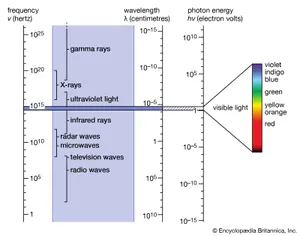

<h1 id="electromagnetic-waves-and-wave-particle-duality">Electromagnetic Waves and Wave-Particle Duality</h1> <style> h1 { color:rgb(22, 47, 77); } h2 { color:rgb(20, 68, 31); } strong { color:rgb(95, 47, 28); } .column{ column-count: 2; max-width: 100%; div{ max-width: 50% } } .important-info { background-color: #f8f9fa; border: 1px solid #dee2e6; border-radius: 4px; box-shadow: 0 2px 4px rgba(0, 0, 0, 0.1); padding: 15px; margin: 10px 0; } table { border: 1px solid var(--border-color); display: block; flex-direction: column; margin: 5px 0; max-width: 85rem; margin-left: auto; margin-right: auto; padding: 1%; table-layout: fixed; width: 100%; } table th { background-color: var(--secondary-color); border-bottom: 2px solid var(--border-color); border-top: 2px solid var(--border-color); color: var(--text-color); display: table-cell; font-size: 1em; font-weight: 600; padding: 8px; text-align: left; } table td { border-bottom: 1px solid var(--border-color); font-size: 1em; padding: 5px; text-align: center; width: fit-content; } ul, { list-style:none; } </style> <hr /> <h2 id="review-simple-harmonic-motion">Review: Simple Harmonic Motion</h2> <!-- style: inverse --> <ul> <li>Mechanical waves illustrated differences between particle (oscillation, sometimes perpendicular) and wave (propagation, superposition) movements and interactions</li> </ul> <hr /> <h2 id="electromagnetic-waves">Electromagnetic Waves</h2> <p>Now we encounter <strong>electromagnetic waves</strong> that don’t need a medium!</p> <ul> <li>These waves show a mysterious <strong>dual nature</strong>: <ul> <li>Sometimes act as waves (interference, diffraction)</li> <li>Sometimes act as particles (photons)</li> </ul> </li> <li>This duality is fundamental to modern technology: <ul> <li>Solar panels</li> <li>Digital cameras</li> <li>Fiber optic communications</li> </ul> </li> </ul> <hr /> <h2 id="the-electromagnetic-spectrum">The Electromagnetic Spectrum</h2> <p><img src="https://science.nasa.gov/wp-content/uploads/2023/06/em_spectrum.jpeg" alt="width:800px" /></p> <div class="important-info"> <p>All electromagnetic waves travel at <strong>speed of light</strong></p> <p>[c = 3.00 \times 10^8\,m/s]</p> <p>Relationship: $c = f\lambda$</p> <ul> <li>where $f$ is frequency and $\lambda$ is wavelength</li> <li>Higher frequency = shorter wavelength = more energy per photon</li> </ul> </div> <hr /> <h2 id="the-electromagnetic-spectrum-applications">The Electromagnetic Spectrum: Applications</h2> <section> <div style="font-size: 0.95rem;"> <div class="language-plaintext highlighter-rouge"><div class="highlight"><pre class="highlight"><code><div class="table"> <table> <thead> <tr> <th style="text-align: right">Type</th> <th style="text-align: center">Wavelength</th> <th style="text-align: center">Applications</th> </tr> </thead> <tbody> <tr> <td style="text-align: right">Radio waves</td> <td style="text-align: center">km to cm</td> <td style="text-align: center">Communications, broadcasting</td> </tr> <tr> <td style="text-align: right">Microwaves</td> <td style="text-align: center">cm to mm</td> <td style="text-align: center">Cooking, radar, cell phones</td> </tr> <tr> <td style="text-align: right">Infrared</td> <td style="text-align: center">mm to 700 nm</td> <td style="text-align: center">Heat detection, night vision</td> </tr> <tr> <td style="text-align: right">Visible light</td> <td style="text-align: center">700-400 nm</td> <td style="text-align: center">Human vision, photography</td> </tr> <tr> <td style="text-align: right">Ultraviolet</td> <td style="text-align: center">400-10 nm</td> <td style="text-align: center">Sterilization, black lights</td> </tr> <tr> <td style="text-align: right">X-rays</td> <td style="text-align: center">10-0.01 nm</td> <td style="text-align: center">Medical imaging, security</td> </tr> <tr> <td style="text-align: right">Gamma rays</td> <td style="text-align: center">< 0.01 nm</td> <td style="text-align: center">Cancer treatment, nuclear detection</td> </tr> </tbody> </table> </div> </code></pre></div> </div> </div> <p><p></p></p> </section> <hr /> <h2 id="evidence-for-light-as-a-wave">Evidence for Light as a Wave</h2> <div style="display: flex; justify-content: space-between; gap: 20px;"> <div style="flex: 1;"> <div class="language-plaintext highlighter-rouge"><div class="highlight"><pre class="highlight"><code><p><img src="Double-slit.svg.png" alt="contain" /></p> <p><img src="Young_gif.gif" alt="width: 15" /></p> </code></pre></div> </div> </div> <div style="flex: 1;"> <div class="language-plaintext highlighter-rouge"><div class="highlight"><pre class="highlight"><code><p>Passing light through a double slit produced clear evidence of wave interference:</p> <ul> <li>It creates alternating bright and dark bands (interference pattern)</li> <li>Bright bands occur where waves combine <strong>constructively</strong></li> <li> <p>Dark bands occur where waves cancel <strong>destructively</strong></p> </li> <li>This pattern can only be explained if light behaves as a <strong>wave</strong>!</li> </ul> </code></pre></div> </div> </div> </div> <hr /> <h2 id="wave-properties-of-light">Wave Properties of Light</h2> <p><img src="https://upload.wikimedia.org/wikipedia/commons/c/c5/Young%27s_Double_Slit_Experiment.svg" alt="width:500px" /></p> <ul> <li>Light creates <strong>interference patterns</strong> when passing through slits</li> <li>Thomas Young’s double-slit experiment (1801) demonstrated wave nature</li> </ul> <div class="important-info"> <p>Mathematical relationship for double-slit interference:</p> <p>[d \sin \theta = m\lambda]</p> <ul> <li>$d$ = slit separation</li> <li>$\theta$ = angle to maximum</li> <li>$m$ = order number (0, 1, 2…)</li> <li>$\lambda$ = wavelength</li> </ul> </div> <hr /> <h2 id="light-as-energy-transport">Light as Energy Transport</h2> <ul> <li>Waves carry energy without transferring matter</li> </ul> <div class="important-info"> <ul> <li>For all waves, intensity is proportional to amplitude squared:</li> </ul> <p>[I \propto A^2]</p> </div> <p>For electromagnetic waves: $I = \frac{1}{2}\varepsilon_0 E_0^2 c$</p> <ul> <li>$\varepsilon_0$ = permittivity of free space</li> <li>$E_0$ = electric field amplitude</li> <li> <p>$c$ = speed of light</p> </li> <li>A bright light bulb (100W) emits about $10^{20}$ photons/second!</li> </ul> <hr /> <h2 id="electric-and-magnetic-field-components">Electric and Magnetic Field Components</h2> <p><img src="https://upload.wikimedia.org/wikipedia/commons/thumb/3/35/Onde_electromagnetique.svg/1920px-Onde_electromagnetique.svg.png" alt="width:600px" /></p> <ul> <li>EM waves consist of <strong>oscillating electric and magnetic fields</strong></li> <li> <p>Fields are <strong>perpendicular</strong> to each other and to direction of travel</p> </li> <li>The fields follow the relationship:</li> </ul> <p>(E = cB)</p> <div class="important-info"> <ul> <li>These oscillating fields <strong>self-sustain</strong> each other: <ul> <li>Changing electric field creates magnetic field</li> <li>Changing magnetic field creates electric field</li> </ul> </li> </ul> </div> <hr /> <h2 id="the-particle-nature-of-light">The Particle Nature of Light</h2> <ul> <li><strong>Newton vs. Huygens debate</strong> (1600s-1700s): <ul> <li>Newton: light is particles (“corpuscles”)</li> <li>Huygens: light is waves</li> </ul> </li> <li>The <strong>photoelectric effect</strong> (observed late 1800s): <ul> <li>Light shining on metal causes electron emission</li> <li>But doesn’t follow wave predictions!</li> </ul> </li> <li><strong>Einstein’s explanation</strong> (1905): <ul> <li>Light consists of discrete packets (photons)</li> <li>Each photon carries a specific amount of energy</li> <li>Won Nobel Prize for this work in 1921</li> </ul> </li> </ul> <hr /> <h2 id="photoelectric-effect-evidence-for-photons">Photoelectric Effect: Evidence for Photons</h2> <!-- _class="column" --> <div style="column"> <div> <div class="language-plaintext highlighter-rouge"><div class="highlight"><pre class="highlight"><code><p><img src="https://upload.wikimedia.org/wikipedia/commons/thumb/a/a6/Photoelectric_effect_in_a_solid_-_diagram.svg/1280px-Photoelectric_effect_in_a_solid_-_diagram.svg.png" alt="bg left" /></p> <div class="important-info"> <p>Only explained by <strong>photons</strong> with $E = hf$</p> </div> <ul> <li>Wave theory prediction: Higher intensity = higher energy electrons</li> <li>Actual observation: Higher frequency = higher energy electrons</li> </ul> </code></pre></div> </div> </div> </div> <hr /> <h2 id="photon-energy">Photon Energy</h2> <ul> <li>There is a <strong>threshold frequency</strong> below which no electrons are emitted</li> </ul> <div class="important-info"> <ul> <li>Energy is <strong>quantized</strong> into discrete packets (photons)</li> <li>Photon energy: $E = hf = \frac{hc}{\lambda}$ <ul> <li>$h$ = Planck’s constant = $6.63 \times 10^{-34}$ J·s</li> <li>$f$ = frequency in Hz</li> <li>$\lambda$ = wavelength in meters</li> </ul> </li> </ul> </div> <hr /> <!-- _backgroundColor: Black _color: yellow --> <h2 id="example-yellow-light-550-nm">Example: Yellow light (550 nm)</h2> <ul> <li>First, convert wavelength from nm to m: <ul> <li>$\lambda = 550 \text{ nm} = 550 \times 10^{-9} \text{ m}$</li> </ul> </li> <li>Now we can calculate energy: <ul> <li>$E = \frac{(6.63 \times 10^{-34} \text{ J}\cdot\text{s})(3.00 \times 10^8 \text{ m/s})}{550 \times 10^{-9} \text{ m}}$</li> <li>$E = 3.62 \times 10^{-19} \text{ J} = 2.26 \text{ eV}$</li> </ul> </li> </ul> <hr /> <h2 id="electron-volt-energy-unit">Electron-Volt: Energy Unit</h2> <div class="important-info"> <ul> <li>One electron-volt (eV) = energy gained by electron accelerated through 1 volt \(1 eV = 1.602 \times 10^{-19} J\)</li> </ul> </div> <ul> <li>Useful for atomic-scale energies</li> <li>Visible light photons: ~1.8-3.1 eV</li> <li>UV photons: ~3.1-124 eV</li> <li>X-rays: ~124-124,000 eV</li> </ul> <hr /> <h2 id="wave-particle-duality">Wave-Particle Duality</h2> <ul> <li>Light behaves as <strong>both</strong> a wave and a particle</li> <li><strong>Which behavior we see depends on the experiment</strong>: <ul> <li>Interference experiments → wave nature</li> <li>Photoelectric effect → particle nature</li> </ul> </li> </ul> <div class="important-info"> <ul> <li>Matter also shows this duality!</li> <li>De Broglie wavelength: $\lambda = \frac{h}{mv}$ <ul> <li>$h$ = Planck’s constant</li> <li>$m$ = mass</li> <li>$v$ = velocity</li> </ul> </li> </ul> </div> <hr /> <h2 id="demonstrating-matter-waves">Demonstrating Matter Waves</h2> <p><img src="https://upload.wikimedia.org/wikipedia/commons/thumb/c/cd/Double-slit_experiment_results_electron.jpg/800px-Double-slit_experiment_results_electron.jpg" alt="width:600px" /></p> <ul> <li>Electrons fired through double slits create <strong>interference patterns</strong></li> <li>These patterns only make sense if electrons are waves!</li> <li>Confirmed by Davisson and Germer in 1927</li> <li>Larger particles have smaller wavelengths: <ul> <li>Electron: λ ≈ 10^-10 m</li> <li>Baseball: λ ≈ 10^-34 m (too small to detect)</li> </ul> </li> </ul> <hr /> <h2 id="practical-applications-of-wave-particle-duality">Practical Applications of Wave-Particle Duality</h2> <ul> <li><strong>Spectroscopy</strong>: Analyzing light spectra to identify materials</li> <li><strong>Solar cells</strong>: Converting photon energy into electrical energy</li> <li><strong>Electron microscopes</strong>: Using electron waves to see tiny objects</li> <li><strong>Quantum computing</strong>: Manipulating quantum states for computation</li> <li><strong>Lasers</strong>: Coherent light based on quantum energy levels</li> <li><strong>Fluorescent materials</strong>: Absorbing and re-emitting photons</li> </ul> <hr /> <h2 id="the-double-slit-experiment-revisited">The Double-Slit Experiment Revisited</h2> <ul> <li>Even single electrons or photons create an interference pattern over time <ul> <li>This means a single particle “interferes with itself”</li> </ul> </li> <li>The <strong>wave function</strong> describes the probability of finding the particle <ul> <li>Observation collapses this probability into a definite position</li> <li>This is the strange reality of <strong>quantum mechanics</strong>!</li> <li><img src="Young_gif-1.gif" alt="alt text" /></li> </ul> </li> </ul> <hr /> <h2 id="detecting-light-from-brightness-to-photons">Detecting Light: From Brightness to Photons</h2> <ul> <li><strong>Classical detection</strong>: Measures average intensity <ul> <li>Light meters in cameras</li> <li>Solar irradiance measurements</li> </ul> </li> <li><strong>Quantum detection</strong>: Counts individual photons <ul> <li>Photomultiplier tubes</li> <li>CCDs in digital cameras</li> <li>Single-photon avalanche diodes</li> </ul> </li> <li><strong>Detection limits</strong>: <ul> <li>Human eye: ~5-10 photons</li> <li>Modern detectors: single photon sensitivity</li> </ul> </li> </ul> <hr /> <h2 id="energy-in-electromagnetic-waves">Energy in Electromagnetic Waves</h2> <div class="important-info"> <ul> <li>Energy density in electric field: $u_E = \frac{1}{2}\varepsilon_0 E^2$</li> <li>Energy density in magnetic field: $u_B = \frac{1}{2}\frac{B^2}{\mu_0}$</li> <li> <p>Total energy density: $u = u_E + u_B = \varepsilon_0 E^2$</p> </li> <li>Energy flow rate (Poynting vector): $\vec{S} = \frac{1}{\mu_0}\vec{E} \times \vec{B}$</li> <li>Magnitude: $S = \frac{EB}{\mu_0} = \varepsilon_0 cE^2$</li> </ul> </div> <ul> <li>Intensity is magnitude of Poynting vector: $I = S$</li> </ul> <hr /> <h2 id="resonant-absorption-of-em-waves">Resonant Absorption of EM Waves</h2> <ul> <li> <p><strong>Resonance</strong>: When EM wave frequency matches natural frequency of a system</p> </li> <li>Different materials and molecules resonate at different frequencies: <ul> <li>Water molecules: Rotate at microwave frequencies (~2.45 GHz)</li> <li>Electrons in atoms: Oscillate at visible/UV frequencies</li> <li>Chemical bonds: Vibrate at infrared frequencies</li> </ul> </li> <li><strong>Applications of resonant absorption</strong>: <ul> <li>Microwave cooking: Water molecules absorb 2.45 GHz radiation</li> <li>MRI: Hydrogen nuclei absorb radio waves in magnetic field</li> <li>Infrared spectroscopy: Identifies molecules by absorption patterns</li> <li>Sunscreen: Absorbs harmful UV radiation</li> </ul> </li> </ul> <hr /> <h2 id="resonance---dangerous-frequencies">Resonance - Dangerous Frequencies</h2> <p>Resonance - a match between an applied wave and the “natural” frequency</p> <iframe width="560" height="315" src="https://www.youtube.com/embed/XggxeuFDaDU?si=Ie7B1jNdrbIQI6oS" title="YouTube video player" frameborder="0" allow="accelerometer; autoplay; clipboard-write; encrypted-media; gyroscope; picture-in-picture; web-share" referrerpolicy="strict-origin-when-cross-origin" allowfullscreen=""></iframe> <hr /> <h2 id="resonance-explained">Resonance Explained</h2> <iframe width="560" height="315" src="https://www.youtube.com/embed/l5Kt0xs_nTk?si=1w8uFcGoHX0YciVf" title="YouTube video player" frameborder="0" allow="accelerometer; autoplay; clipboard-write; encrypted-media; gyroscope; picture-in-picture; web-share" referrerpolicy="strict-origin-when-cross-origin" allowfullscreen=""></iframe> <hr /> <hr /> <h2 id="connection-to-electric-charges">Connection to Electric Charges</h2> <ul> <li>All electromagnetic waves originate from <strong>accelerating charges</strong>: <ul> <li>Radio waves: electrons oscillating in antennas</li> <li>Light: electrons jumping between energy levels</li> <li>X-rays: electrons hitting targets</li> </ul> </li> <li>Static charges create electric fields</li> <li>Moving charges create magnetic fields</li> <li> <p>Accelerating charges create electromagnetic waves</p> </li> <li>Next up: Understanding electric charges and their interactions</li> </ul> <hr /> <h2 id="practice-problem-1-photon-energy">Practice Problem 1: Photon Energy</h2> <p>Calculate the energy of a photon of yellow light with wavelength 580 nm.</p> <hr /> <p><strong>Solution:</strong> Using $E = \frac{hc}{\lambda}$:</p> <ul> <li>$h = 6.63 \times 10^{-34}$ J·s</li> <li>$c = 3.00 \times 10^8$ m/s</li> <li>$\lambda = 580 \times 10^{-9}$ m</li> </ul> <p>$E = \frac{(6.63 \times 10^{-34})(3.00 \times 10^8)}{580 \times 10^{-9}}$ $E = \frac{1.989 \times 10^{-25}}{580 \times 10^{-9}}$ $E = 3.43 \times 10^{-19}$ J</p> <p>Converting to electron-volts: $E = \frac{3.43 \times 10^{-19}}{1.602 \times 10^{-19}} = 2.14$ eV</p> <hr /> <h2 id="practice-problem-2-broadcast-radio-analysis">Practice Problem 2: Broadcast Radio Analysis</h2> <p>A radio station broadcasts at 101.5 MHz. Calculate: a) The wavelength of these radio waves b) The energy of a single photon</p> <hr /> <p><strong>Solution:</strong></p> <style> .column{ display: flex; margin: 10px 10px 10px 10px; div { border-right: 1px solid black; padding: 5px; } } </style> <div class="column"> <div> <div class="language-plaintext highlighter-rouge"><div class="highlight"><pre class="highlight"><code><p>a) Using $c = f\lambda$:</p> <ul> <li>$c = 3.00 \times 10^8$ m/s</li> <li>$f = 101.5 \times 10^6$ Hz</li> </ul> <p>$\lambda = \frac{c}{f} = \frac{3.00 \times 10^8 \, m/s}{101.5 \times 10^6\, \frac{1}{s}}$</p> <p>$ = 2.96\,m$</p> </code></pre></div> </div> </div> <div> <div class="language-plaintext highlighter-rouge"><div class="highlight"><pre class="highlight"><code><p>b) Using $E = hf$:</p> <ul> <li>$h = 6.63 \times 10^{-34}$ J·s</li> <li>$f = 101.5 \times 10^6$ Hz</li> </ul> <p>$E = (6.63 \times 10^{-34})(101.5 \times 10^6) = 6.73 \times 10^{-26}$ J</p> <p>Converting to electron-volts: $E = \frac{6.73 \times 10^{-26}}{1.602 \times 10^{-19}} = 4.20 \times 10^{-7}$ eV</p> </code></pre></div> </div> </div> </div> <hr /> <h2 id="practice-problem-3-em-wave-physics">Practice Problem 3: EM Wave Physics</h2> <p>An electromagnetic wave in vacuum has an electric field amplitude of 2.0 × 10³ V/m. Find: a) The magnetic field amplitude b) The intensity of this wave</p> <hr /> <p><strong>Solution:</strong> a) Using $E = cB$:</p> <ul> <li>$E = 2.0 \times 10^3$ V/m</li> <li>$c = 3.00 \times 10^8$ m/s</li> </ul> <p>$B = \frac{E}{c} = \frac{2.0 \times 10^3}{3.00 \times 10^8} = 6.67 \times 10^{-6}$ T</p> <p>b) Using $I = \frac{1}{2}\varepsilon_0 E^2 c$:</p> <ul> <li>$\varepsilon_0 = 8.85 \times 10^{-12}$ F/m</li> <li>$E = 2.0 \times 10^3$ V/m</li> </ul> <p>$I = \frac{1}{2}(8.85 \times 10^{-12})(2.0 \times 10^3)^2(3.00 \times 10^8)$ $I = \frac{1}{2}(8.85 \times 10^{-12})(4.0 \times 10^6)(3.00 \times 10^8)$ $I = 5.31 \times 10^3$ W/m²</p> <hr /> <h2 id="practice-problem-4-double-slit-experiment">Practice Problem 4: Double-Slit Experiment</h2> <p>Light with wavelength 650 nm passes through two slits separated by 0.2 mm. If a screen is placed 1.5 m away, what is the distance from the central maximum to the second bright fringe?</p> <p><strong>Solution:</strong> For bright fringes, $d \sin \theta = m\lambda$, where $m$ is the order (0, 1, 2…)</p> <p>For the second bright fringe, $m = 2$:</p> <ul> <li>$\lambda = 650 \times 10^{-9}$ m</li> <li>$d = 0.2 \times 10^{-3}$ m</li> </ul> <p>$\sin \theta = \frac{m\lambda}{d} = \frac{2 \times 650 \times 10^{-9}}{0.2 \times 10^{-3}} = \frac{1300 \times 10^{-9}}{0.2 \times 10^{-3}} = 6.5 \times 10^{-3}$</p> <p>For small angles, $\sin \theta \approx \theta$ (in radians), so $\theta \approx 6.5 \times 10^{-3}$ rad</p> <p>The distance on the screen is $y = L \times \theta$:</p> <ul> <li>$L = 1.5$ m</li> <li>$\theta = 6.5 \times 10^{-3}$ rad</li> </ul> <p>$y = 1.5 \times 6.5 \times 10^{-3} = 9.75 \times 10^{-3}$ m = 9.75 mm</p> <hr /> <h2 id="practice-problem-5-de-broglie-wavelength">Practice Problem 5: De Broglie Wavelength</h2> <p>Calculate the de Broglie wavelength of an electron moving at 4.5 × 10⁶ m/s.</p> <p><strong>Solution:</strong> Using $\lambda = \frac{h}{mv}$:</p> <ul> <li>$h = 6.63 \times 10^{-34}$ J·s</li> <li>$m = 9.11 \times 10^{-31}$ kg</li> <li>$v = 4.5 \times 10^6$ m/s</li> </ul> <p>$\lambda = \frac{6.63 \times 10^{-34}}{(9.11 \times 10^{-31})(4.5 \times 10^6)}$ $\lambda = \frac{6.63 \times 10^{-34}}{4.10 \times 10^{-24}}$ $\lambda = 1.62 \times 10^{-10}$ m = 0.162 nm</p> <hr /> <h2 id="practice-problem-6-photon-detection">Practice Problem 6: Photon Detection</h2> <p>A light source emits green light (wavelength 525 nm) with power 2.0 μW. How many photons per second does it emit?</p> <hr /> <p><strong>Solution:</strong> Energy of one photon = $E_{photon} = \frac{hc}{\lambda}$:</p> <ul> <li>$h = 6.63 \times 10^{-34}$ J·s</li> <li>$c = 3.00 \times 10^8$ m/s</li> <li>$\lambda = 525 \times 10^{-9}$ m</li> </ul> <p>$E_{photon} = \frac{(6.63 \times 10^{-34})(3.00 \times 10^8)}{525 \times 10^{-9}} = 3.79 \times 10^{-19}$ J</p> <p>Number of photons per second = $\frac{\text{Total Power}}{E_{photon}}$:</p> <ul> <li>Total Power = 2.0 × 10⁻⁶ W = 2.0 × 10⁻⁶ J/s</li> </ul> <p>$\text{Photons/second} = \frac{2.0 \times 10^{-6}}{3.79 \times 10^{-19}} = 5.28 \times 10^{12}$ photons/s</p> <hr /> <h2 id="practice-problem-7-microwave-resonance">Practice Problem 7: Microwave Resonance</h2> <p>A microwave oven operates at 2.45 GHz. Calculate the wavelength of these microwaves and explain how they cook food through resonance.</p> <hr /> <p><strong>Solution:</strong> Wavelength calculation using $c = f\lambda$:</p> <ul> <li>$c = 3.00 \times 10^8$ m/s</li> <li>$f = 2.45 \times 10^9$ Hz</li> </ul> <p>$\lambda = \frac{c}{f} = \frac{3.00 \times 10^8}{2.45 \times 10^9} = 0.122$ m = 12.2 cm</p> <p>Cooking explanation:</p> <ul> <li>Water molecules are polar (positive and negative ends)</li> <li>The 2.45 GHz frequency is specifically chosen to match a rotational resonance frequency of water</li> <li>As microwaves pass through food, water molecules rapidly rotate to align with oscillating electric field</li> <li>This rotation causes molecular friction/collisions</li> <li>Kinetic energy is transferred to surrounding molecules as heat</li> <li>This resonant absorption is much more efficient than non-resonant frequencies, allowing targeted heating of water-containing foods</li> </ul> <hr /> <h1 id="review-questions">Review Questions</h1> <ol> <li> <p>How does the energy of a red photon compare to the energy of a blue photon?</p> </li> <li> <p>Why can we observe interference patterns with electrons?</p> </li> <li> <p>What quantity is conserved when a photon is absorbed by an electron?</p> </li> <li> <p>How does increasing the frequency of light affect the photoelectric effect?</p> </li> <li> <p>Why don’t we notice wave properties of large objects like baseballs?</p> </li> </ol>